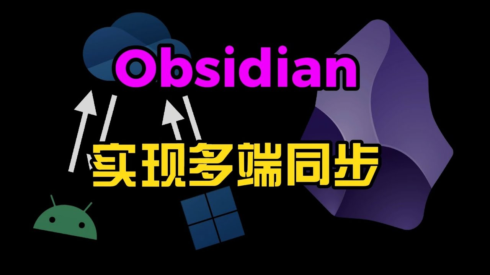
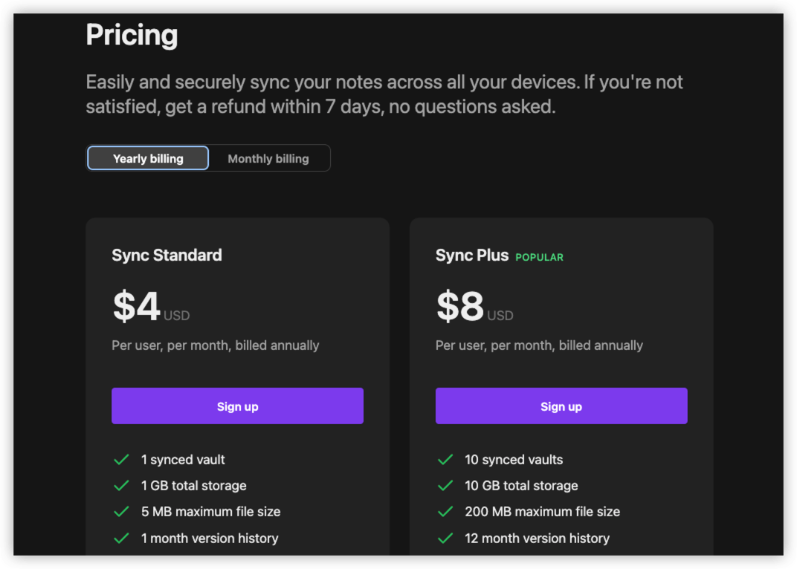

记笔记的目的不是记忆过去，记忆过去是为了改变未来。
目前，市面上有很多 Obsidian 的多端同步方案，其中最好的当然是官方的收费同步方案了。官方的同步更快速而且安全，并且提供了 端到端加密、历史版本、跨平台同步、离线工作 等功能 。但是，缺点就是需要收费，包年每个月 4 美元(有资源限制)。

除了官方的收费同步服务，目前社区的多端同步方案，均以使用支持 Webdav 的云盘或云服务的对象存储为主，缺点就是有的平台有限制，而且有时因为网络问题，可能同步需要达到分钟级别。
在使用了很多开源方案之后，最后选择了自建 Webdav 服务 Alist(提供笔记存储服务) 和 remotely-save(多端同步功能) 插件的组合，并且使用 Git(提供历史版本功能) 进行同步的方案。

下面列举一下，常见的开源方案，以及对应方案的问题以及简单的使用注意事项。具体的操作步骤就不搬运了，感兴趣的话，可以自行查找相关官方文档或者部署方式。
笔记存储方案对比
- 坚果云(基本不可用)
- 使用方法
- 注册坚果云账户并添加应用程序
- 账户信息，安全选项，第三方应用管理，添加应用并生成密码
- 注意事项
- 移动端的仓库名需要和电脑端一致
- 移动端扫码只是为了和电脑端同步设置，也可以手动添加
- 用
MGit拉到Android设备，用iSH拉到苹果设备 - 坚果云显示第三方
Webdav服务请求为 **半小时请求600次的限制
- 使用方法
- Teracloud
- 注册账户
- 个人信息
- 邮箱
- 用户
ID用于登录使用 - 登录密码
- 注意事项
- 新用户有
20G存储空间- 官网地址：
https://infini-cloud.net/en/ Webdav地址：https://aki.teracloud.jp/dav/- 可以通过
mount命令挂载到Linux服务器上面
- 可以通过
- 官网地址：
- 使用
4D42H/XTY4可额外得5GBGet more capacityEnter friends Introduce code
Webdav同步工具推荐Windows：Zotero
- 新用户有
- 注册账户
- OSS - S3
- 注册
aliyun OSS账户并添加应用程序- 官网选择 产品、存储、对象存储 OSS 并购买资源包
- 我们根据自己选择对应的
OSS存储，40G/9RMB/1Year - 管理控制台，选择
bucket桶，即文件夹 - 需要记住，
Endpoint和bucket域名后续配置使用 - 使用
AccessKey创建访问秘钥，进行配置使用
- 注意事项
- 阿里云，因为下载还会有外网流量，也是要收费的
- 注册
- 坚果云(基本不可用)
多设备同步插件对比
- 使用
remotely-save插件- 使用方法
- 安装
remotely save插件 - 添加坚果云
webdev配置 - 电脑端生成二维码
- 移动端安装插件并导入二维码配置
- 启动设置完成实时同步
- 安装
- 参考链接
- 使用方法
- 使用
obsidian-livesync插件(更新频繁)- 插件介绍
- 自搭建在线同步，一个社区实现的在线同步插件
- 使用一个自搭建的或者购买的
CouchDB作为中转服务器
- 参考链接
- 插件介绍
- 其他同步方案介绍
- syncthing
- https://www.escapelife.site/posts/cab27de1.html
- 手机、电脑、平板都下载，然后添加设备和共享文件夹
- 可以来多端同步，但是同步时所有设备都要开机，效果差
- 微力同步
- https://www.verysync.com
- 简单易用的多平台文件同步软件，惊人的传输速度是不同于其他产品的最大优势， 微力同步 的智能
P2P技术加速同步，会将文件分割成若干份仅KB的数据同步，而文件都会进行AES加密处理。
- syncthing
- 使用
提供历史版本功能
- 使用
git进行灾备备份- 使用方法
- 安装
git并新建仓库(最好是私有仓库) - 找到需要备份的
obsidian仓库，执行git init初始化该仓库 - 安装
obsidian git插件并设置 - 新建
.gitignore文件，忽略.obsidian/.trash目录 - 插件配置修改，打开多长时间同步和有修改才同步选项
- 安装
- 使用方法
- 参考地址
- 使用